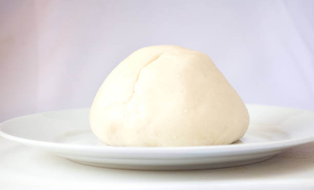

Pounded Yam

Description
Ingredients
Steps
- Peel the yam, make sure to remove the skin completely
- Cut the peeled yam into small-sized chunks
- Place the yam chunks in a pot of water and bring it to a boil
- Cook the yam until it is soft and easily pierced with a fork
- Drain the boiled yam using a colander to remove excess water
- Place the boiled yam chunks into a mortar and use the pestle to pound it
- Pound it in circular motion while turning and folding it over repeatedly
- Continue pounding until the yam becomes smooth, stretchy, and free of lumps
- Pounded yam is typically served hot and is a common accompaniment to soups and stews
Back to Home